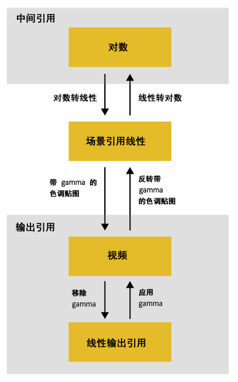

Autodesk 颜色管理允许您将任何颜色空间用作工作空间，并支持许多常用和标准颜色空间。在导入时，图像会自动从其输入颜色空间转化为工作空间。此外，某些应用程序允许您在颜色空间之间进行切换以执行特定操作。
一般而言，建议使用宽色域的颜色空间进行工作。这将确保您可以正确表示尽可能多的颜色。例如，数字电影 (DCI) 包含不使用负值的情况下无法使用 Rec. 709 主颜色表示的颜色（由 sRGB 和 HD 视频使用）。Autodesk 颜色管理能够保留负值，但其他工具可能没有此功能。虽然存在此缺陷，但 Rec. 709/sRGB 主颜色仍然是场景线性工作空间最常用的颜色。
ACES 2065-1 是一个色域极宽的颜色空间，可以表示任何可见的颜色。可以将其用作工作空间，但由于色域太宽，某些颜色操作可能会产生意外的结果。
ACEScg、ACEScc/ACEScct、DCI-P3、ProPhoto-RIMM 或 UHDTV (Rec. 2020) 是很好的折中选择。它们的色域很宽，但并不是太宽。
某些操作最适用于特定空间类型中的颜色：场景线性、视频或对数编码。工作时，您可能希望切换颜色空间以执行特定操作，然后切换回主工作空间或其他空间以执行其他操作。对于这些情况，建议使用完全可反转变换以保留尽可能多的颜色信息。
最适用于场景线性颜色的操作
以下操作最适用于场景线性颜色，即具有与场景中的光能量成正比的代码值的颜色。
- 合成和融合
- 光学效果（包括镜头模糊和散焦操作）
- 运动模糊
- 抗锯齿
- 调整大小
- 子像素重新定位
- 3D 渲染
- 照明和重新照明
需要视频颜色的操作
以下操作需要视频颜色（即限制在 [0, 1] 范围内的颜色值）。
- 颜色反转
- 将 RGB 转化为 HLS、HSV 或 YCbCr
最适用于视频或对数颜色的操作
以下操作最适用于视频或对数颜色：
- 许多颜色校正操作
- 向量示波器和柱状图
- 跟踪与稳定
- 颗粒和噪波操作
- 非锐化遮罩
- 视频过渡
- 创建渐变
手动在工作空间之间转化
如果您需要通过从集合中
手动指定自定义变换链来在工作空间之间转化，以下这些注释可能会十分有用：
- 您可以通过应用色调贴图（如 tone-map/ 目录中的 PhotoMap_gamma_2.4）将场景线性转化为视频。一般而言，色调贴图使用 S 形曲线来增加对比度和压缩高光。
- 您可以通过应用反向色调贴图（如 tone-map/ 目录中的 inversePhotoMap_gamma_2.4）将视频转化为场景线性。如果片段最初拍摄为视频或者使用不同的色调贴图转化，这会造成不精确。但在许多情况下，这是很好的近似值，不影响工作。需要特别注意的是，仅从视频图像中移除显示 Gamma 会生成线性化输出相关值，而不是场景线性值，不存在大于 1.0 的值。
- 您可以使用 film/LogLin/ 目录中的一个 Lin_to_Log 变换将场景线性图像转化到对数空间。
- 可以使用 film/LogLin/ 目录中的一个 Log_to_Lin 变换将对数图像转化为场景线性。
- 可以将视频图像转化到对数空间，方法是先转化为场景线性，然后转化为对数。
- 也可以将对数图像转化到视频空间，方法是先转化为场景线性，然后转化为视频。
